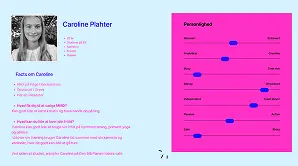

T1 Introugen
Temabeskrivelse
Introugen er en introduktion til uddannelsen multimediedesigner. Der blev givet et overblik over de forskellige fagområder, og hvilke roller de kan have i erhvervslivet. Derudover var der en introduktion til samarbejde, værktøjer og programmer.


Proces og udførelse
Jeg lærte Figma at kende, og hvordan man brugte Figmas redskaber. Hertil lærte jeg også, hvordan man bruger det i en gruppekontekst.
Jeg lavede mit første VS Code-projekt og opsatte min første HTML-side. Jeg lærte at bruge GitHub og oprette et repository. Både opsætning og hvordan man navigerer rundt.